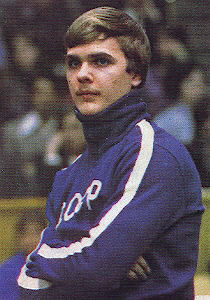

Vladimir Markelov (USSR)
1977 European AA Champion
1977 World Cup AA Champion

Medal Total
Olympic Games: 1
Gold, 2 Silver
World Championships: 1 Gold, 1 Silver
World Cup: 4 Gold, 1 Silver, 1 Bronze
European Championships: 2 Gold, 2 Silver, 2 Bronze
Vladimir was born on October 24, 1957 and trained at the Central Army Sports Club in Moscow.
Competition Results
1971
Jr. Friendship Tournament (Druzhba): 1st Team, 4th AA, 5th V
1972
Jr. USSR-HUN Dual Meet: 1st AA
1974
Jr. Friendship Tournament (Druzhba): 6th PB
Specialized Sports School Championships (candidate): 3rd AA
1975
GDR-USSR Dual Meet: 1st Team, 4th AA, 1st FX, 1st PH
Jr. Friendship Tournament (Druzhba): 1st Team, 2nd AA, 1st PH, 2nd HB,
3rd R, 4th FX
Jr. USSR-GDR Dual Meet: 1st Team, 3rd AA, 1st FX, 1st PH
Specialized Sports School Championships: 1st AA
1976
American Cup: 2nd AA
Chunichi Cup: 1st AA
Olympic Games: 2nd Team, 34th AA, 2nd FX
Riga International: 1st AA, 1st R, 1st HB, 3rd V
USSR Championships: 2nd Team, 2nd AA
USSR Cup: 1st AA, 1st PB, 1st R, 2nd PH, 3rd FX, 3rd V, 5th HB
USSR-SUI Dual Meet: 1st Team, 1st AA
1977
European Championships: 1st AA, 1st R, 2nd FX, 2nd
HB, 3rd PH, 3rd V, 8th PB
Moscow News International: 1st AA, 1st FX, 1st R, 1st V
University Games: 2nd AA, 1st V, 2nd R, 2nd HB
USSR Championships: 3rd Team, 1st AA
USSR Cup: 1st AA, 1st R, 2nd PH, 2nd V
World Cup: 1st AA, 1st PH, 1st V, 1st HB, 2nd
R, 5th PB
1978
USSR Championships: 1st Team, 1st AA
World Championships: 2nd Team, 10th AA (prelims)
1979
USSR Championships: 3rd R
USSR Spartakiade: 4th R
World Championships: 1st Team, 4th AA
1980
Olympic Games: 1st Team, 9th AA (prelims)
USSR Championships: 3rd AA, 1st PH, 1st R, 2nd V
USSR Cup: 4th AA
This page was created on September
03, 2005 and was last updated on August 23, 2007.
© Gymn Forum